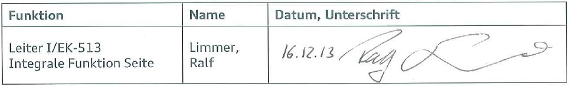
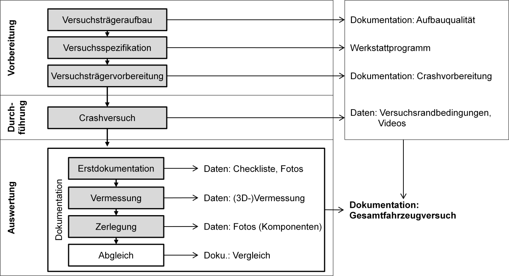

Versuche im Seitenaufprall
Versuche im Seitenaufprall[redacted-person]
[redacted-co]
D[redacted]
Versuche im Seitenaufprall
LAH.DUM.880.FK
Lastenheft für Engineering-Leistungen
Verteiler
|
|
|
|---|---|---|
|
|
[redacted-person] |

Inhaltsverzeichnis
[redacted-person] (LAH) beschreibt die Mindestanforderungen für die Begleitung von Gesamt- fahrzeugversuchen im Seitenaufprall und ist Teil eines übergeordneten Vergabelastenheftes in welchem Projektziele und Projektrandbedingungen spezifiziert sind. Weiterhin sind die ange- gebenen mit geltenden Unterlagen sowie die von den Fachabteilungen ausgehändigten Las- tenhefte und Templates zu berücksichtigen.
[redacted-person] der beschriebenen Mindestanforderungen ist in Form eines Pflichtenhefts zu dokumentieren. [redacted-person] ist stets aktuell zu halten.
In diesem Lastenheft nicht ausreichend beschriebene Punkte sind in Absprache mit den zu- ständigen Fachabteilungen zu klären. Änderungen und Abweichungen bedürfen der schriftli- chen Fixierung in einem Lastenheft.
Das vorliegende Lastenheft bezieht sich ausschließlich auf Leistungen im Rahmen der be- schriebenen Projektabläufe.
Art und Umfang der Leistung richten sich nach diesem Lastenheft, es sei denn, ein Sachverhalt wird individuell ausgehandelt und ausdrücklich schriftlich abweichend geregelt.
[redacted-person] des Lastenheftes ebenso wie die weiteren zur Verfügung gestellten Unterlagen un- terliegen der Geheimhaltung und dürfen Dritten nur mit ausdrücklicher Genehmigung des zu- ständigen Fachbereiches der [redacted-co] zugänglich gemacht werden. Soweit eine Weitergabe an Dritte, insbesondere an mit dem Auftragnehmer verbundene Unternehmen, für die Erstellung eines Angebots erforderlich ist, hat der Auftragnehmer dafür Sorge zu tragen, dass die Ver- traulichkeit sichergestellt ist.
Ziel dieses Beauftragungsumfangs ist die Definition, Prozesssteuerung und ausführliche Do- kumentation der beauftragten Seitenaufprall- und Komponentenversuche.
Die grau hinterlegten Umfänge müssen zur Erfüllung des Gewerks begleitet werden, sind aber nicht Umfang der Beauftragung.

Abbildung 2-1: Prozess im [redacted-person]
[redacted-person] beinhaltet wie in Kapitel 2 beschrieben die Vorbereitung, Durchführung und die Auswertung des Gesamtfahrzeugversuchs. Zu jedem dieser Prozessschritte sind im Rahmen der Beauftragung die in diesem Kapitel spezifizierten Ergebnisse zu erzielen.
Verzüge die das geforderte Ergebnis terminlich oder qualitativ gefährden sind der Fachabtei- lung [redacted-co] unverzüglich aufzuzeigen.
[redacted-person] beinhaltet drei Prozessschritte: den Versuchsträgeraufbau (VTAB), die Versuchsspezifikation und die Versuchsträgervorbereitung (VTVB).
Für den VTAB und die VTVB ist eine Dokumentation anzufertigen. [redacted-person] er- folgt in Form eines Werkstattprogramms. Die erforderlichen Programme, Vorlagen und Temp- lates werden von der [redacted-co] zur Verfügung gestellt. (siehe Kapitel 5.2.2: Templates)
Versuchsträgeraufbaudokumentation
[redacted-person] ist in Form einer Dokumentation in Bild und Text darzustellen und dient der Transparenz und Nachvollziehbarkeit im Entwicklungsprozess. Für den Versuch aus- schlaggebende Komponenten sind inklusive deren Teile- bzw. Konstruktionsnummer und Än- derungsstandes aufzunehmen. [redacted-person] ist Voraussetzung für den Gesamtfahr- zeugversuch somit spätestens zum Start der Versuchsträgervorbereitung anzufertigen und in der regelmäßigen Projektstatusrunde durchzusprechen.
Prüfumfänge:
Die folgend aufgezählten Prüfumfänge dienen zur Abschätzung des Aufwandes. Ein detaillier- ter Prüfkatalog wird dem Auftragnehmer zu Beginn seiner Tätigkeiten in tabellarischer Form zur Verfügung gestellt.
Struktur
Karosserie: Konstruktionsstand und relevante Verbindungstechnik ([redacted-person])
Türrohbau
Anpasskonstruktionen / Abweichungen vom Konstruktionsstand
Einbringung von Maßnahmen
Sitze
Interieur
Türverkleidung
A-/B-/C-Säulenverkleidung
Schwellerverkleidung
Mittelkonsole
Himmel
[redacted-person] ( z.[redacted-person] / Türpackage (Zuziehhilfe / Fensterheber / Paddings / [redacted]Brems- und Kraft- stoffleitungen / … ))
Bordnetz ( Funktionsfähigkeit / Kabelbaum / rel. Steuergeräte wie Gateway und SafetyComputer)
Rückhaltesystem
Seitenairbags, ggf. Kopfthoraxairbag
Kopfairbags
Gurte
Etc.
[redacted-person] können in unterschiedlichen Projekten und über die Projektdauer variieren. Anpassungen im Rahmen des Entwicklungsprozesses sind zu berücksichtigen.
Versuchsspezifikation
[redacted-person] ist in Form eines Werkstattprogramms durchzuführen. [redacted-person] und die erforderlichen Programme werden von [redacted-co] zur Verfügung gestellt. (siehe Ka- pitel Templates). [redacted-person] ist bis spätestens 12 Arbeitstage vor dem Ver- suchstermin vollständig zu befüllen und auf Einladung mit Vertretern des prüfenden Testinsti- tutes durchzusprechen.
Grundsätzlich ist jeder Versuch nach Rücksprache mit den Bauteilverantwortlichen (BTVs) mit den aktuellsten Bauteilständen auszustatten. Sofern diese nicht verfügbar sind oder gezielt äl- tere Stände verbaut sind, ist dieses mit der zuständigen Fachabteilung abzustimmen. Die für den Versuch benötigte Ausstattungsvariante ist in Zusammenarbeit mit der Systemauslegung und Funktionsverantwortung innerhalb der Statusrunde festzulegen. Ausgenommen sind die Rückhaltesysteme. Diese werden vom Systemausleger definiert.
Für die Erprobungstauglichkeit notwendige Strukturmaßnahmen sind mit der strukturausle- genden Fachabteilung und den Funktionsentwicklern abzustimmen.
Versuchsträgervorbereitung
Im Rahmen der Versuchsträgervorbereitung ist in Zusammenarbeit mit der beauftragten Werkstatt bzw. dem beauftragten Testinstitut die Erprobungswürdigkeit des Gesamtfahrzeu- ges sicherzustellen. In diesem Zusammenhang sind folgende Umfänge zu beachten:
Crashtauglichkeit nach eventuellen Vorversuchen
Umsetzung des Werkstattprogramms
Der richtigen Positionierung und Ausrichtung der Messmittel
Dokumentation:
[redacted-person] ist in Form einer Dokumentation in Bild und Text darzustellen und dient der Transparenz und Nachvollziehbarkeit im Entwicklungsprozess. [redacted-person]- tion ist Voraussetzung für den Gesamtfahrzeugversuch und ist somit im Vorfeld des Versuchs anzufertigen und im Rahmen der Statusgespräche durchzusprechen.
[redacted-person] ist zentraler Ansprechpartner der Funktionsauslegung für das Testinstitut. In dieser Funktion sind folgende Tätigkeiten zu erfüllen:
Überprüfen der Kameraeinstellungen
Überprüfen der Dummypositionierung inklusive der Dummyvermessung
Überprüfung der (Werkstatt-)Checkliste
Kontrolle der Crashrandbedingungen
[redacted-person] des Versuchs ist ausschließlich bei Gewährleitsung aller relevanten Crash- randbedingungen (siehe auch Arbeitsanweisungen)1 zulässig. Sobald einflussreiche oder ge- nau spezifizierte Parameter nicht den Vorgaben entsprechen, bedarf die Durchführung zwangsläufig der eindeutigen Zustimmung der beauftragenden Fachabteilung.
Die genauen Versuchstermine sind an den zuständigen Funktions- und Systemausleger in Form einer Outlook-Einladung zu kommunizieren.
Grundsätzlich ist für einen Gesamtfahrzeugversuch die Anwesenheit des Auftragnehmers als zentraler Ansprechpartner der Funktionsentwicklung erforderlich. Sofern für die Erfüllung die- ser Anforderung ein Anfahrtsweg von mehr als 300 Kilometern zurückzulegen ist, kann unter Umständen auf die Vor-Ort-Präsenz verzichtet werden. Die erforderliche Abstimmung erfolgt im Rahmen der Projektstatusrunde.
1 Arbeitsanweisungen liegen für die [redacted-person] des Prüfinstituts bei [redacted-co] vor und wer- den bei Bedarf zur Verfügung gestellt
Erstdokumentation und Vermessung
Sofern neben der standardisierten Erstdokumentation und Vermessung durch das ausführen- de Prüfinstitut gesonderte Datenaufnahmen in Form von Fotografien oder Vermessungen nö- tig sind, sind diese Umfänge mit dem Prüfinstitut abzustimmen.
Im Anschluss an den Versuch ist das geprüfte Gesamtfahrzeug zusammen mit dem Funktions- ausleger zu besichtigen. [redacted-person] und Vorbereitung dieses Termins übernimmt der Auftragnehmer.
Zerlegung
Im Anschluss an den Gesamtfahrzeugversuch wird das Crashobjekt von dem beauftragten Testinstitut zur weiteren Analyse zerlegt. Die extrahierten Bauteile und Komponenten werden detailliert Fotografiert und ggf. vermessen. [redacted-person] sind vom Auftragnehmer unter Berücksichtigung aller crashrelevanten Bauteilen und Komponenten zu koordinieren. [redacted-person]- fälligkeiten oder Anforderung durch die Fachabteilung sind die betroffenen Komponenten den Bauteil- oder Funktionsverantwortlichen zur Verfügung zu stellen.
Abgleich
Im Rahmen der Versuchsauswertung ist ein Abgleich der Versuchsergebnisse
des aktuellen Versuchs zu dem Vorversuch
des aktuellen Versuchs zu der Simulation nötig.
In Relation zu setzende Parameter und Eigenschaften sind:
Intrusionsgeschwindigkeiten (gespiegelt an Lastenheftvorgaben LAH.xxx.xxx [Anlage4])
Insassenwerte (gespiegelt an Lastenheftvorgaben LAH.xxx.xxx [Anlage3])
Insassenkinematik
Dummypositionierung
Entfaltung des SAB/KTAB
Entfaltung des KAB
globales Intrusionsverhalten
Versagen
Dokumentation:
[redacted-person] der Abgleiche zur Simulation und zum Vorversuch sind in Form einer Doku- mentation in Bild und Text darzustellen. Auffälligkeiten und deutliche Abweichungen sind zu identifizieren und mit den betroffenen Fachabteilungen zu diskutieren. [redacted-person]- renzwerte und Vorlagen werden von [redacted-co] zur Verfügung gestellt. (siehe Kapitel 5.2.2: Templates)
[redacted-person] ist in einer ausführlichen, gesamthaften Dokumentation aufzu- bereiten. Grundlage hierfür sind die Tätigkeiten und einzelnen Dokumentation der früheren Prozessschritte des Versuchs.
[redacted-person] hat den Anspruch alle wichtigen Informationen des Versuches zu enthal- ten, sodass ausschließlich anhand der Dokumentation ein Überblick über das Projekt bezüglich des in dem Versuch getesteten Lastfalls gewonnen werden kann.
Für jede Versuchsart wird von der Fachabteilung [redacted-co] ein Template zur Verfügung ge- stellt.
Nachfolgend aufgeführte Themen dienen zur Aufwandsabschätzung und stellen den Standart- umfang der Gesamtfahrzeugdokumentation dar:
Einordnung in den Projektterminplan, nächste Meilensteine
Erprobungsgrund/ -schwerpunkt ggf. Fazit des Vorversuch (Zusammenfassung)
Aufbaustand inkl. Änderungen zur Vorgabe und Vorversuch
Versuchsbedingungen
Geschwindigkeit
Gewichte inkl. Verteilung
Trimmlage
Trefferlage
Tankinhalt
Abgleich zu Simulation und Vorversuch (siehe Kapitel 3.3.3)
[redacted]mit Ampelblatt
Türöffnen
Intrusionsgeschwindigkeiten
Insassenwerte
Entfaltung SAB / KAB
ZZP
Tankdichtigkeit
Überlebensraum
Strukturintegrität
PostCrash: Türöffnen nach 5 sec. / Warnblinken / etc.
Auffälligkeiten
projektspezifische Eigenschaften (Zierleisten, Beleuchtungen usw.)
Empfehlung von Maßnahmen
[redacted-person]
[redacted-person] kann in unterschiedlichen Projekten und über die Projektdauer variieren. Anpassungen im Rahmen des Entwicklungsprozesses sind zu berücksichtigen.
[redacted-person] der Dokumentation ist vor der Archivierung (siehe Datenablage) mit der Fachabteilung bis spätestens 14 Tage nach Versuchsdurchführung abzustimmen.
Sofern es sich bei dem Versuch um einen Freigabeversuch handelt, sind zusätzlich zu der Ge- samtfahrzeugdokumentation die Freigabedokumente vorzubereiten. Die standardisierten Templates werden von [redacted-co] zur Verfügung gestellt.
[redacted-person] sind Teil des Entwicklungsprozesses eines Gesamtfahrzeugs.
[redacted-person] Seitenaufprall ist tabellarisch (siehe Kapitel 5.2.2: Template) über die Be- treuungsdauer zu pflegen.
Komponentenversuche sind analog der Gesamtfahrzeugversuche in identischem Prozessablauf wie in Abbildung 2-1 aufgezeigt unter Berücksichtigung der reduzierten Umfänge und Ver- suchsträgerkomplexität durchzuführen.
[redacted-person] gelten
Dacheindrückung
Türeindrückung
B-Säulenversuche
Karosserieschlitten
[redacted-person] eines Gesamtversuchs im Seitencrash startet mit dem Versuchsträgerauf- bau ca. 24 Wochen vor dem tatsächlichen Prüftermin und endet mit der Bereitstellung der letzten Versuchs- beziehungsweise Freigabedokumentation. [redacted-person] müssen bis spä- testens 2 Kalenderwochen nach Versuch vorliegen.
Ablage und Austausch
[redacted-person] und Dokumentationen die im Laufe des Prozesses erstellt und genutzt werden sind zentral abzulegen. [redacted-person] und die Freischaltung für die benötigten Projektlaufwerke werden von [redacted-co] zum Projektbeginn zur Verfügung gestellt.
[redacted-person], auch während der Bearbeitung, dieser Daten auf lokalen Datenspeichern ist nicht zulässig.
Es gelten die Geheimhaltungsvereinbarungen [redacted-co].
Formate, Vorlagen und Templates
Alle für die Anforderungserfüllung dieses Lastenheftes benötigten Templates inklusive deren Formaten und Bezeichnungen sind Tabelle 4-1 zu entnehmen:
|
|
|
|
|---|---|---|---|
|
|
|
|
|
|
|
|
|
|
|
|
|
|
|
|
|
|
|
|
|
|
|
|
Tabelle 4-1: Übersicht: Templates
[redacted-person] enthalten Mindestumfänge und können, sofern durch die Projektrandbedingun- gen erforderlich, angepasst werden.